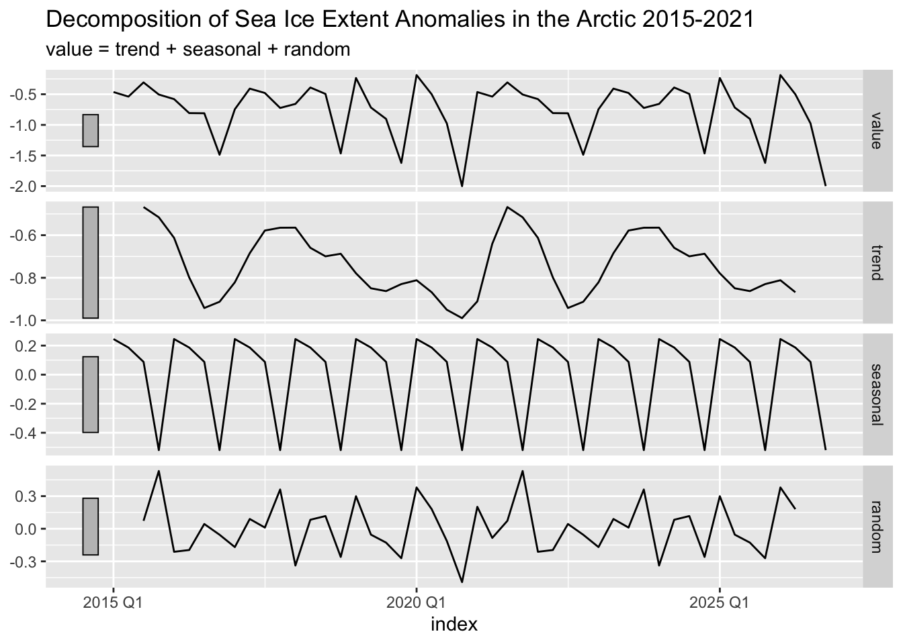

The Arctic Sea, once an area nearly impenetrable, has become a new playground for shipping and tourism alike. This is impart due to advances in ships and navigation allowing safer passage to areas once completely isolated. More importantly, and what this analysis is meant to reflect, is the effect climate change has had on ice extent allowing for more ships to voyage, more months out of the year throughout the arctic. It has been reported that between the years 2013 and 2019 the number of ships entering arctic grew by 25%. (PAME). In 2017, The Polar Code was enacted by the International Maritime Organization providing framework for safely navigating polar waters while adhering to environmental protocol. The region is under a time of immense change, and understanding ship traffic patterns is integral to assessing potential increased destruction to the area.
To frame my question I will primarily be using satellite collected data tracking unique ship observations in the Pacific Arctic sector which extends from the Aleutian Islands through Bering Sea and into the southern Chukchi and Beaufort Seas.
The data was collected monthly between January 1, 2015 and December 31, 2020. To calculate shipping intensity, they used an Automatic Identification System data collected from all ships over 300 gross tonnes on an international voyage, all cargo ships over 500 gross tonnes, and all passenger ships. They then converted the AIS data into a monthly hex data set which I downloaded as vector data. I chose to focus on the monthly sum of unique ships (both cargo and passenger) in the region.
Visualized Hex Data
Code
`2015-01`<-`2015-01`|>mutate_all(~replace(., is.na(.), 0))`2015-04`<-`2015-04`|>mutate_all(~replace(., is.na(.), 0))`2015-07`<-`2015-07`|>mutate_all(~replace(., is.na(.), 0))`2015-10`<-`2015-10`|>mutate_all(~replace(., is.na(.), 0))jan <-tm_shape(`2015-01`) +tm_polygons(col ="nMMSI_A",palette ="viridis",title ="Number of Unique Ships",breaks =c(0,1,100,200,300,400,500) ) +tm_layout(legend.outside =TRUE, title ="January 2015")apr <-tm_shape(`2015-04`) +tm_polygons(col ="nMMSI_A",palette ="viridis",title ="Number of Unique Ships",breaks =c(0,1,100,200,300,400,500) ) +tm_layout(legend.outside =TRUE, title ="April 2015")july <-tm_shape(`2015-07`) +tm_polygons(col ="nMMSI_A",palette ="viridis",title ="Number of Unique Ships",breaks =c(0,1,100,200,300,400,500) ) +tm_layout(legend.outside =TRUE, title ="July 2015")oct <-tm_shape(`2015-10`) +tm_polygons(col ="nMMSI_A",palette ="viridis",title ="Number of Unique Ships",breaks =c(0,1,100,200,300,400,500) ) +tm_layout(legend.outside =TRUE, title ="October 2015")
Climate Bulletin: Arctic Sea Ice Extent Anomalies
I also utilized sea ice anomaly data from Copernicus Climate Change data base which uses ECMWF’s (European Center for Medium Weather Forecasts) ERA-Interim reanalysis of observations. For the data I utilized the calculation for absolute sea ice area (SIA) anomaly in millions sq km.
My Analysis plan
1. Time Series Analysis
I wanted to look at the changes in ship traffic over time and how these may change given the part of region of the data set we were looking at. To do this I split my data up into north and south and ran decomposition to understand the underlying trends. I also ran this on the sea ice anomaly data (see appendix).
2. OLS Linear regression
I wanted to understand what factors determine the number of ships sited in a given month. To do this I summed each hex value to determine the number of vessels registered per month. I split these up to north and south and ran OLS linear regression with sea ice anomaly, year, and season (first or last half of the year) as my predicting variables. I then combined the data sets and ran an OLS linear regression which now included region (north or south) as a predictor of monthly ship numbers. Then finally I included an interaction to see if the effect of the season depends on the region.
From these two figures you can see the different ways seasonal and yearly trends play in the northern and southern regions of our data set. The number of ships seen in the northern region, is much more dependent on the season than the southern. This makes sense, because the ice is much denser in the earlier half of the year. We can see from the visualization of our data, it is rare to see many ships travel far north in January and April. This also plays into the intuition why the yearly trend for the northern portion of the data is stronger. As sea ice melts, the area where we will see more and more ship traffic will be the northern polar areas where it was once barricaded by ice.
To begin, I ran regression to predict monthly ship observations in the southern region of my data set (see appendix). The only predictor that had a significant effect on amount of ships seen monthly in the southern region of our data set was year. The intercept was nonsensical but the model predicts that each year ship sightings grow by an estimated 1,492 ships.
I then ran regression to predict monthly ship observations in the northern region as you can see below.
mod1 <-lm(Value ~abs(Extent) + Year + Season, data = anomaly_north)mod1 %>%tbl_regression(intercept=TRUE) %>%as_gt() %>% gt::tab_source_note(gt::md("*Kelly Kapsar, Benjamin Sullender, and Aaron Poe. 2022. North Pacific and Arctic Marine Vessel Traffic Dataset (2015-2020); Hexagon Data.*"))
Characteristic
Beta
95% CI1
p-value
(Intercept)
-2,326,423
-3,416,236, -1,236,609
<0.001
abs(Extent)
-2,346
-4,719, 26
0.052
Year
1,156
615, 1,696
<0.001
Season
First_Half
—
—
Last_half
15,338
13,260, 17,416
<0.001
Kelly Kapsar, Benjamin Sullender, and Aaron Poe. 2022. North Pacific and Arctic Marine Vessel Traffic Dataset (2015-2020); Hexagon Data.
1 CI = Confidence Interval
Adjusted R-squared: 0.929014
Interpretation
Coefficients: Unlike the southern region, the northern region has more significant predictors. This makes sense from what we saw in our time series decomposition. For each unit increase in ice extent (1 million sq km farther from the mean) the model predicts to see 2,346 more ships holding year fixed and season fixed. For each year increase, holding extent and season fixed, ship sightings grow by an estimated 2,346. And finally, the last half of the year adds a predicted increase of 15,338 ship sightings compared to the beginning half of the year holding fixed the year and ice extent. Next I combined my southern and northern observations. And ran regression with all of my predictors and no interactions (See appendix)
mod3 <-lm(Value ~ Region +Season + Region:Season, data = all_anomaly_dat)mod3 %>%tbl_regression(intercept=TRUE) %>%as_gt() %>% gt::tab_source_note(gt::md("*Kelly Kapsar, Benjamin Sullender, and Aaron Poe. 2022. North Pacific and Arctic Marine Vessel Traffic Dataset (2015-2020); Hexagon Data.*"))
Characteristic
Beta
95% CI1
p-value
(Intercept)
3,867
523, 7,212
0.024
Region
north
—
—
south
58,290
53,560, 63,020
<0.001
Season
First_Half
—
—
Last_half
14,255
9,525, 18,985
<0.001
Region * Season
south * Last_half
-16,002
-22,691, -9,312
<0.001
Kelly Kapsar, Benjamin Sullender, and Aaron Poe. 2022. North Pacific and Arctic Marine Vessel Traffic Dataset (2015-2020); Hexagon Data.
1 CI = Confidence Interval
Adjusted R-squared: 0.9529827
Coefficients: The intercept: 3,867 ships is the predicted number of ship sightings in the northern region in the first half of the year. 58,290 is the difference in predicted ship sightings between the north and south. 14,255 is the predicted difference in ship sightings between the first and last half of the year. From the interaction coefficient, if we wanted to determine the number of predicted ship sightings in the south in the last half of the year we would calculate
\[ShipSightings = 3,867 + 58,290 + 14,255 - 16,002\]\[ 60,410 \] An adjusted R-squared value of .9529 means that season and region alone contribute to about 95% percent of the variability in ship sightings.
Finally, I wanted to see the strength of the model with all of my predictors and the interaction between season and region.
mod4 <-lm(log(Value) ~ Extent + Year + Region +Season + Region:Season, data = all_anomaly_dat)mod4 %>%tbl_regression(intercept=TRUE) %>%as_gt() %>% gt::tab_source_note(gt::md("*Kelly Kapsar, Benjamin Sullender, and Aaron Poe. 2022. North Pacific and Arctic Marine Vessel Traffic Dataset (2015-2020); Hexagon Data.*"))
Characteristic
Beta
95% CI1
p-value
(Intercept)
-187
-274, -101
<0.001
Extent
0.21
0.02, 0.39
0.032
Year
0.10
0.05, 0.14
<0.001
Region
north
—
—
south
2.9
2.7, 3.1
<0.001
Season
First_Half
—
—
Last_half
1.7
1.5, 2.0
<0.001
Region * Season
south * Last_half
-1.7
-2.0, -1.4
<0.001
Kelly Kapsar, Benjamin Sullender, and Aaron Poe. 2022. North Pacific and Arctic Marine Vessel Traffic Dataset (2015-2020); Hexagon Data.
1 CI = Confidence Interval
Adjusted R-Squared: 0.9611927
Coefficients: The residuals of this final model were closer to a normal distribution when ship sightings was logged. Th e interpretation of the coefficients reflects that.
The intercept is nonsensical due to the nature of our year variable. From the model, we can see that sea ice extent has an effect on the amount of ships observed in our data set. A 1% change in sea ice extent increases ships by 21%. The south has 94% more ship sightings than the north. the last half of the years adds a predicted 81% more ship sightings than the north.
Interpretation and Conclusion:
As we can see year and sea ice extent are significant predictors, but the inclusion of them in the model only increases the R-squared by about 1%. Based on this model and the above analysis, I feel confident concluding that arctic ship traffic in the northern region of my data set is undergoing change and is more vulnerable to the effects of sea ice decline than the southern portion. This makes sense as throughout the entirety of the year, you still see ship observations in the south, and ship navigation is not determined by ice extent, as it is in the northern region.
Limitations:
One limitation may come from interpreting my models. In order to conduct my analysis, I totaled ship observations in each area. Ship observations between hexagons naturally includes the same vessels. This means when one interprets the predicted values values of my model 58,290 ship observations in the south doesn’t mean 58,290 ships, but rather times a ship was seen, regardless of if it was already registered. Also, for my sea ice extent anomaly data I only had a holistic calculation for the entirety of the arctic, not the specific region my ship traffic focused on. For this I was assuming ice extent trends for the arctic where close enough to the actual numbers in my region, which could have affected the accuracy of my models. In addition, it is also difficult to promise that my predictors are exogenous.
Future Research:
I think it would be interesting to dig deeper into the northern region and target which areas are seeing a large increase in ship observations. To do this it may be better to have ice extent data that apply to more specific regions. I would also suggest looking at specific key months to see how they are changing. For example, if the season that ice becomes too thick to travel is November, it would be interesting to look at how that month is changing over time too understand how fast season extensions are affecting ship traffic.
anomaly <- all_anomaly_dat |>select(Extent)anomaly_ts <-ts(anomaly, frequency=4, start=c(2015,1))anomaly_ts <-as_tsibble(anomaly_ts)anomaly_ts %>%model(classical_decomposition(value, type ="additive") ) %>%components() %>%autoplot() +labs(title ="Decomposition of Sea Ice Extent Anomalies in the Arctic 2015-2021")

Code
mod <-lm(Value ~ Year, data = anomaly_south)mod %>%tbl_regression(intercept=TRUE) %>%as_gt() %>% gt::tab_source_note(gt::md("*Kelly Kapsar, Benjamin Sullender, and Aaron Poe. 2022. North Pacific and Arctic Marine Vessel Traffic Dataset (2015-2020); Hexagon Data.*"))
Characteristic
Beta
95% CI1
p-value
(Intercept)
-2,948,149
-6,551,902, 655,604
0.10
Year
1,492
-295, 3,278
0.10
Kelly Kapsar, Benjamin Sullender, and Aaron Poe. 2022. North Pacific and Arctic Marine Vessel Traffic Dataset (2015-2020); Hexagon Data.
1 CI = Confidence Interval
Code
mod2 <-lm(Value ~ Season + Year + Region + Extent, data = all_anomaly_dat)mod2 %>%tbl_regression(intercept=TRUE) %>%as_gt() %>% gt::tab_source_note(gt::md("*Kelly Kapsar, Benjamin Sullender, and Aaron Poe. 2022. North Pacific and Arctic Marine Vessel Traffic Dataset (2015-2020); Hexagon Data.*"))
Characteristic
Beta
95% CI1
p-value
(Intercept)
-3,047,874
-5,432,428, -663,321
0.013
Season
First_Half
—
—
Last_half
8,136
3,589, 12,683
<0.001
Year
1,516
333, 2,698
0.013
Region
north
—
—
south
50,289
46,425, 54,153
<0.001
Extent
4,076
-1,115, 9,266
0.12
Kelly Kapsar, Benjamin Sullender, and Aaron Poe. 2022. North Pacific and Arctic Marine Vessel Traffic Dataset (2015-2020); Hexagon Data.
1 CI = Confidence Interval
Residual Distributions of my models
Code
mod <-lm(Value ~ Year, data = anomaly_south)res <-resid(mod)interaction_errors <-ggplot(data = mod, aes(sample = res)) +geom_qq() +geom_qq_line() +ggtitle("Southern region residuals")interaction_errors
Code
mod3 <-lm(Value ~ Region +Season + Region:Season, data = all_anomaly_dat)res <-resid(mod3)interaction_errors <-ggplot(data = mod3, aes(sample = res)) +geom_qq() +geom_qq_line() +ggtitle("All data: season * region residuals")interaction_errors
Code
mod2 <-lm(Value ~ Season + Year + Region + Extent, data = all_anomaly_dat)res <-resid(mod2)interaction_errors <-ggplot(data = mod2, aes(sample = res)) +geom_qq() +geom_qq_line() +ggtitle("All data: all predictors residuals")interaction_errors
Code
mod1 <-lm(Value ~abs(Extent) + Year + Season, data = anomaly_north)res <-resid(mod1)interaction_errors <-ggplot(data = mod1, aes(sample = res)) +geom_qq() +geom_qq_line() +ggtitle("Northern region residuals")interaction_errors
Code
mod4 <-lm(log(Value) ~ Extent + Year + Region +Season + Region:Season, data = all_anomaly_dat)res <-resid(mod4)interaction_errors <-ggplot(data = mod4, aes(sample = res)) +geom_qq() +geom_qq_line() +ggtitle("All Data: All predictors + region * season residuals")interaction_errors
Citation
BibTeX citation:
@online{giesie2022,
author = {Mallory Giesie},
title = {Analysis of {Changing} {Arctic} {Traffic}},
date = {10/24/2022},
url = {https://mallorygiesue.github.io/posts/arctic-traffic-analysis/},
langid = {en}
}
---title: "Analysis of Changing Arctic Traffic"description: "Time Series Analysis of Changing Arctic Traffic from 2015 to 2020"author: - name: Mallory Giesie url: https://mallorygiesie.github.io/ affiliation: Master of Environmental Data Science Program @ The Bren School (UCSB) affiliation-url: https://ucsb-meds.github.io/ date: 10-24-2022categories: [Statistics for the Environment, R, MEDS] citation: url: https://mallorygiesue.github.io/posts/arctic-traffic-analysis/ draft: false format: html: theme: journal code-tools: true code-fold: true fontcolor: "#1A1F16"image: pame_shipping.jpg---```{r}#| include: falselibrary(sf)library(feasts)library(raster)library(tmap)library(tidyverse)library(raster)library(terra)library(dplyr)library(lubridate)library(plotly)library(ggplot2)library(gtsummary)rootdir <-"/Users/mallorygiesie/Desktop/MEDS/eds-222/final_project"```**How is Traffic in the Arctic Changing?***Introduction:*The Arctic Sea, once an area nearly impenetrable, has become a new playground for shipping and tourism alike. This is impart due to advances in ships and navigation allowing safer passage to areas once completely isolated. More importantly, and what this analysis is meant to reflect, is the effect climate change has had on ice extent allowing for more ships to voyage, more months out of the year throughout the arctic. It has been reported that between the years 2013 and 2019 the number of ships entering arctic grew by 25%. ([PAME](https://www.pame.is/projects/arctic-marine-shipping/arctic-shipping-status-reports)). In 2017, The Polar Code was enacted by the International Maritime Organization providing framework for safely navigating polar waters while adhering to environmental protocol. The region is under a time of immense change, and understanding ship traffic patterns is integral to assessing potential increased destruction to the area.**My Data**```{r}#| include: falsefiles <-dir("/Users/mallorygiesie/Desktop/MEDS/eds-222/final_project/ship_data",recursive =TRUE,full.names =TRUE,pattern ="\\.shp$" )as.list(files)# Function to read in all shape files and name them the month and year of when they were collectedread_in <-function(filepath) { date <-str_sub(filepath,-11,-5) file <-st_read(filepath) |>select(nMMSI_A)assign(date, file, envir =parent.frame())}# Reading through list of file paths and applying the function defined abovefor (i in files) {read_in(i)}df_geom <-Filter(function(x)is(x, "data.frame"), mget(ls()))```[**North Pacific and Arctic Marine Vessel Traffic Dataset (2015-2020); Hexagon Data**](https://arcticdata.io/catalog/view/doi:10.18739/A2XG9FC41)To frame my question I will primarily be using satellite collected data tracking unique ship observations in the Pacific Arctic sector which extends from the Aleutian Islands through Bering Sea and into the southern Chukchi and Beaufort Seas.The data was collected monthly between January 1, 2015 and December 31, 2020. To calculate shipping intensity, they used an Automatic Identification System data collected from all ships over 300 gross tonnes on an international voyage, all cargo ships over 500 gross tonnes, and all passenger ships. They then converted the AIS data into a monthly hex data set which I downloaded as vector data. I chose to focus on the monthly sum of unique ships (both cargo and passenger) in the region.**Visualized Hex Data**```{r}`2015-01`<-`2015-01`|>mutate_all(~replace(., is.na(.), 0))`2015-04`<-`2015-04`|>mutate_all(~replace(., is.na(.), 0))`2015-07`<-`2015-07`|>mutate_all(~replace(., is.na(.), 0))`2015-10`<-`2015-10`|>mutate_all(~replace(., is.na(.), 0))jan <-tm_shape(`2015-01`) +tm_polygons(col ="nMMSI_A",palette ="viridis",title ="Number of Unique Ships",breaks =c(0,1,100,200,300,400,500) ) +tm_layout(legend.outside =TRUE, title ="January 2015")apr <-tm_shape(`2015-04`) +tm_polygons(col ="nMMSI_A",palette ="viridis",title ="Number of Unique Ships",breaks =c(0,1,100,200,300,400,500) ) +tm_layout(legend.outside =TRUE, title ="April 2015")july <-tm_shape(`2015-07`) +tm_polygons(col ="nMMSI_A",palette ="viridis",title ="Number of Unique Ships",breaks =c(0,1,100,200,300,400,500) ) +tm_layout(legend.outside =TRUE, title ="July 2015")oct <-tm_shape(`2015-10`) +tm_polygons(col ="nMMSI_A",palette ="viridis",title ="Number of Unique Ships",breaks =c(0,1,100,200,300,400,500) ) +tm_layout(legend.outside =TRUE, title ="October 2015")```::: {layout-nrow="2"}```{r}#| echo: false#| include: truejan``````{r}#| echo: false#| include: trueapr``````{r}#| echo: false#| include: truejuly``````{r}#| echo: false#| include: trueoct```:::**Climate Bulletin: Arctic Sea Ice Extent Anomalies**I also utilized sea ice anomaly data from [Copernicus Climate Change](https://climate.copernicus.eu/sea-ice) data base which uses ECMWF's (European Center for Medium Weather Forecasts) [ERA-Interim reanalysis](https://climate.copernicus.eu/climate-bulletin-about-data-and-analysis) of observations. For the data I utilized the calculation for absolute sea ice area (SIA) anomaly in millions sq km.**My Analysis plan***1. Time Series Analysis*I wanted to look at the changes in ship traffic over time and how these may change given the part of region of the data set we were looking at. To do this I split my data up into north and south and ran decomposition to understand the underlying trends. I also ran this on the sea ice anomaly data (see appendix).*2. OLS Linear regression*I wanted to understand what factors determine the number of ships sited in a given month. To do this I summed each hex value to determine the number of vessels registered per month. I split these up to north and south and ran OLS linear regression with sea ice anomaly, year, and season (first or last half of the year) as my predicting variables. I then combined the data sets and ran an OLS linear regression which now included region (north or south) as a predictor of monthly ship numbers. Then finally I included an interaction to see if the effect of the season depends on the region.**My Results****Decomposition**```{r}all_years<-do.call(rbind, df_geom) |> tibble::rownames_to_column("Cycle") |>mutate(hexID =str_sub(Cycle, 9)) |>mutate(Cycle =str_sub(Cycle, 1, 7)) |>select(-hexID) |>pivot_wider(names_from ='Cycle',values_from ='nMMSI_A') |>mutate_all(~replace(., is.na(.), 0))south <- all_years |>slice(0:3500)north <- all_years |>slice(3501:6553)south <-st_drop_geometry(south)yearly_totals <-colSums(south, na.rm=T)traffic_ts_south <-ts(yearly_totals, frequency=4, start=c(2015,1))#plot.ts(traffic_ts_south)traffic_ts_south <-as_tsibble(traffic_ts_south)south_time <- traffic_ts_south %>%model(classical_decomposition(value, type ="additive") ) %>%components() %>%autoplot() +labs(title ="Decomposition of Ship Traffic: Bering Sea from 2015-2021")north <-st_drop_geometry(north)yearly_totals <-colSums(north, na.rm=T)traffic_ts_north<-ts(yearly_totals, frequency=4, start=c(2015,1))#plot.ts(traffic_ts_north)traffic_ts_north <-as_tsibble(traffic_ts_north)north_time <- traffic_ts_north %>%model(classical_decomposition(value, type ="additive") ) %>%components() %>%autoplot() +labs(title ="Decomposition of Ship Traffic: Northern Bering and Southern Chukchi")```::: {layout-nrow="1"}```{r}#| echo: false#| include: true#| warning: falsenorth_time``````{r}#| echo: false#| include: true#| warning: falsesouth_time```:::From these two figures you can see the different ways seasonal and yearly trends play in the northern and southern regions of our data set. The number of ships seen in the northern region, is much more dependent on the season than the southern. This makes sense, because the ice is much denser in the earlier half of the year. We can see from the visualization of our data, it is rare to see many ships travel far north in January and April. This also plays into the intuition why the yearly trend for the northern portion of the data is stronger. As sea ice melts, the area where we will see more and more ship traffic will be the northern polar areas where it was once barricaded by ice.**Multiple Linear Regression**```{r}july_anomaly <-read.csv(file.path(rootdir, "july_anomaly.csv")) |>slice(37:42) |> dplyr::select(Date, X.SIA.anomaly)oct_anomaly <-read.csv(file.path(rootdir, "oct_anomaly.csv")) |>slice(37:42) |> dplyr::select(Date, X.SIA.anomaly)january_anomaly <-read.csv(file.path(rootdir, "january_anomaly.csv")) |>slice(37:42) |> dplyr::select(Date, X.SIA.anomaly)april_anomaly <-read.csv(file.path(rootdir, "april_anomaly.csv")) |>slice(37:42) |> dplyr::select(Date, X.SIA.anomaly)anomaly_south <-rbind(july_anomaly,oct_anomaly,april_anomaly,january_anomaly) |>arrange(Date) |>cbind(traffic_ts_south) |> dplyr::select(-index) |> dplyr::rename(Extent = X.SIA.anomaly, Value = value) |>mutate(Date = lubridate::ym(Date)) |>mutate(Year = lubridate::year(Date), Month = lubridate::month(Date)) |>mutate(Month =as.factor(Month)) |>mutate(Season =ifelse(Month ==1| Month ==4, "First_Half", "Last_half")) |>mutate(Season =as.factor(Season))anomaly_north <-rbind(july_anomaly,oct_anomaly,april_anomaly,january_anomaly) |>arrange(Date) |>cbind(traffic_ts_north) |> dplyr::select(-index) |> dplyr::rename(Extent = X.SIA.anomaly, Value = value) |>mutate(Date = lubridate::ym(Date)) |>mutate(Year = lubridate::year(Date), Month = lubridate::month(Date)) |>mutate(Month =as.factor(Month)) |>mutate(Season =ifelse(Month ==1| Month ==4, "First_Half", "Last_half")) |>mutate(Season =as.factor(Season))```To begin, I ran regression to predict monthly ship observations in the southern region of my data set (see appendix). The only predictor that had a significant effect on amount of ships seen monthly in the southern region of our data set was year. The intercept was nonsensical but the model predicts that each year ship sightings grow by an estimated 1,492 ships.I then ran regression to predict monthly ship observations in the northern region as you can see below.$$NorthernShipCount = \beta_0 + \beta_1 * Year_i + \beta_1 * Season_i + \beta_1 * Ice Extent + \epsilon_i$$```{r}mod1 <-lm(Value ~abs(Extent) + Year + Season, data = anomaly_north)mod1 %>%tbl_regression(intercept=TRUE) %>%as_gt() %>% gt::tab_source_note(gt::md("*Kelly Kapsar, Benjamin Sullender, and Aaron Poe. 2022. North Pacific and Arctic Marine Vessel Traffic Dataset (2015-2020); Hexagon Data.*"))```**Adjusted R-squared: 0.929014****Interpretation****Coefficients:** Unlike the southern region, the northern region has more significant predictors. This makes sense from what we saw in our time series decomposition. For each unit increase in ice extent (1 million sq km farther from the mean) the model predicts to see 2,346 more ships holding year fixed and season fixed. For each year increase, holding extent and season fixed, ship sightings grow by an estimated 2,346. And finally, the last half of the year adds a predicted increase of 15,338 ship sightings compared to the beginning half of the year holding fixed the year and ice extent. Next I combined my southern and northern observations. And ran regression with all of my predictors and no interactions (See appendix)```{r}anomaly_south <- anomaly_south |>mutate(Region ="south")anomaly_north <- anomaly_north |>mutate(Region ="north")all_anomaly_dat <-rbind(anomaly_south, anomaly_north) |>mutate(Region =as.factor(Region))```**Understanding the effect season has on the each region**$$TotalShipCount = \beta_0 + \beta_1 * Region_i + \beta_1 * Season_i +\beta_3 * Season_i * Region_i + \epsilon_i$$```{r}mod3 <-lm(Value ~ Region +Season + Region:Season, data = all_anomaly_dat)mod3 %>%tbl_regression(intercept=TRUE) %>%as_gt() %>% gt::tab_source_note(gt::md("*Kelly Kapsar, Benjamin Sullender, and Aaron Poe. 2022. North Pacific and Arctic Marine Vessel Traffic Dataset (2015-2020); Hexagon Data.*"))```**Adjusted R-squared: 0.9529827****Coefficients:** The intercept: 3,867 ships is the predicted number of ship sightings in the northern region in the first half of the year. 58,290 is the difference in predicted ship sightings between the north and south. 14,255 is the predicted difference in ship sightings between the first and last half of the year. From the interaction coefficient, if we wanted to determine the number of predicted ship sightings in the south in the last half of the year we would calculate$$ShipSightings = 3,867 + 58,290 + 14,255 - 16,002$$ $$ 60,410 $$ An adjusted R-squared value of .9529 means that season and region alone contribute to about 95% percent of the variability in ship sightings.Finally, I wanted to see the strength of the model with all of my predictors and the interaction between season and region.**Putting it all together**$$TotalShipCount = \beta_0 + \beta_1 * Year_i + \beta_1 * Season_i + \beta_1 * IceExtent_i + \beta_3 * Season_i * Region_i + \epsilon_i$$```{r}mod4 <-lm(log(Value) ~ Extent + Year + Region +Season + Region:Season, data = all_anomaly_dat)mod4 %>%tbl_regression(intercept=TRUE) %>%as_gt() %>% gt::tab_source_note(gt::md("*Kelly Kapsar, Benjamin Sullender, and Aaron Poe. 2022. North Pacific and Arctic Marine Vessel Traffic Dataset (2015-2020); Hexagon Data.*"))```**Adjusted R-Squared: 0.9611927****Coefficients:** The residuals of this final model were closer to a normal distribution when ship sightings was logged. Th e interpretation of the coefficients reflects that.The intercept is nonsensical due to the nature of our year variable. From the model, we can see that sea ice extent has an effect on the amount of ships observed in our data set. A 1% change in sea ice extent increases ships by 21%. The south has 94% more ship sightings than the north. the last half of the years adds a predicted 81% more ship sightings than the north.**Interpretation and Conclusion:**As we can see year and sea ice extent are significant predictors, but the inclusion of them in the model only increases the R-squared by about 1%. Based on this model and the above analysis, I feel confident concluding that arctic ship traffic in the northern region of my data set is undergoing change and is more vulnerable to the effects of sea ice decline than the southern portion. This makes sense as throughout the entirety of the year, you still see ship observations in the south, and ship navigation is not determined by ice extent, as it is in the northern region.**Limitations:**One limitation may come from interpreting my models. In order to conduct my analysis, I totaled ship observations in each area. Ship observations between hexagons naturally includes the same vessels. This means when one interprets the predicted values values of my model 58,290 ship observations in the south doesn't mean 58,290 ships, but rather times a ship was seen, regardless of if it was already registered. Also, for my sea ice extent anomaly data I only had a holistic calculation for the entirety of the arctic, not the specific region my ship traffic focused on. For this I was assuming ice extent trends for the arctic where close enough to the actual numbers in my region, which could have affected the accuracy of my models. In addition, it is also difficult to promise that my predictors are exogenous.**Future Research:**I think it would be interesting to dig deeper into the northern region and target which areas are seeing a large increase in ship observations. To do this it may be better to have ice extent data that apply to more specific regions. I would also suggest looking at specific key months to see how they are changing. For example, if the season that ice becomes too thick to travel is November, it would be interesting to look at how that month is changing over time too understand how fast season extensions are affecting ship traffic.[**Github Repository**](https://github.com/mallorygiesie/Arctic_ship_traffic_analysis/tree/main)**Appendix****Supporting Figures**```{r}#| warning: falseanomaly <- all_anomaly_dat |>select(Extent)anomaly_ts <-ts(anomaly, frequency=4, start=c(2015,1))anomaly_ts <-as_tsibble(anomaly_ts)anomaly_ts %>%model(classical_decomposition(value, type ="additive") ) %>%components() %>%autoplot() +labs(title ="Decomposition of Sea Ice Extent Anomalies in the Arctic 2015-2021")```::: {layout-nrow="1"}```{r}mod <-lm(Value ~ Year, data = anomaly_south)mod %>%tbl_regression(intercept=TRUE) %>%as_gt() %>% gt::tab_source_note(gt::md("*Kelly Kapsar, Benjamin Sullender, and Aaron Poe. 2022. North Pacific and Arctic Marine Vessel Traffic Dataset (2015-2020); Hexagon Data.*"))``````{r}mod2 <-lm(Value ~ Season + Year + Region + Extent, data = all_anomaly_dat)mod2 %>%tbl_regression(intercept=TRUE) %>%as_gt() %>% gt::tab_source_note(gt::md("*Kelly Kapsar, Benjamin Sullender, and Aaron Poe. 2022. North Pacific and Arctic Marine Vessel Traffic Dataset (2015-2020); Hexagon Data.*"))```:::**Residual Distributions of my models**::: {layout-nrow="2"}```{r}mod <-lm(Value ~ Year, data = anomaly_south)res <-resid(mod)interaction_errors <-ggplot(data = mod, aes(sample = res)) +geom_qq() +geom_qq_line() +ggtitle("Southern region residuals")interaction_errors``````{r}mod3 <-lm(Value ~ Region +Season + Region:Season, data = all_anomaly_dat)res <-resid(mod3)interaction_errors <-ggplot(data = mod3, aes(sample = res)) +geom_qq() +geom_qq_line() +ggtitle("All data: season * region residuals")interaction_errors``````{r}mod2 <-lm(Value ~ Season + Year + Region + Extent, data = all_anomaly_dat)res <-resid(mod2)interaction_errors <-ggplot(data = mod2, aes(sample = res)) +geom_qq() +geom_qq_line() +ggtitle("All data: all predictors residuals")interaction_errors``````{r}mod1 <-lm(Value ~abs(Extent) + Year + Season, data = anomaly_north)res <-resid(mod1)interaction_errors <-ggplot(data = mod1, aes(sample = res)) +geom_qq() +geom_qq_line() +ggtitle("Northern region residuals")interaction_errors``````{r}mod4 <-lm(log(Value) ~ Extent + Year + Region +Season + Region:Season, data = all_anomaly_dat)res <-resid(mod4)interaction_errors <-ggplot(data = mod4, aes(sample = res)) +geom_qq() +geom_qq_line() +ggtitle("All Data: All predictors + region * season residuals")interaction_errors```:::